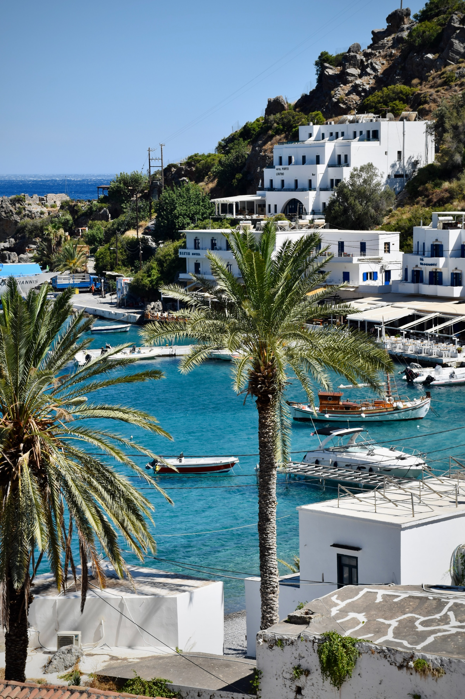
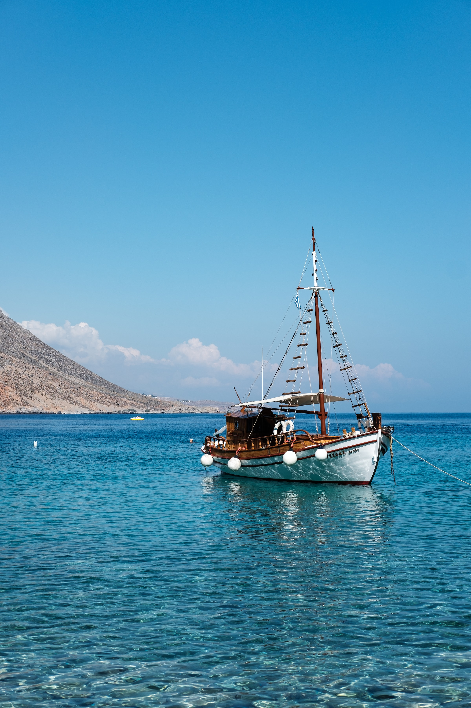
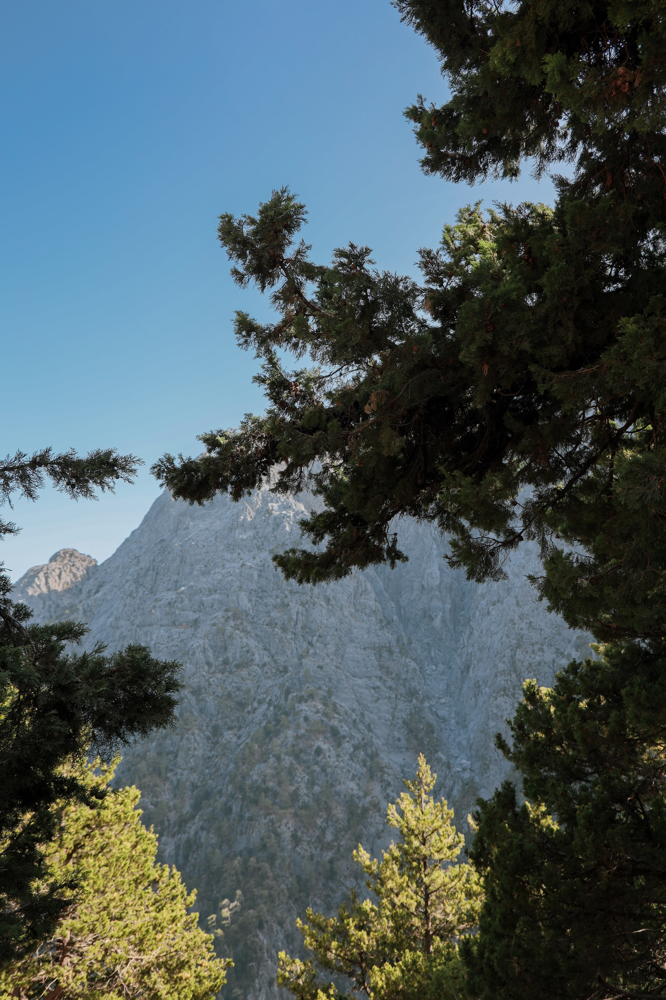
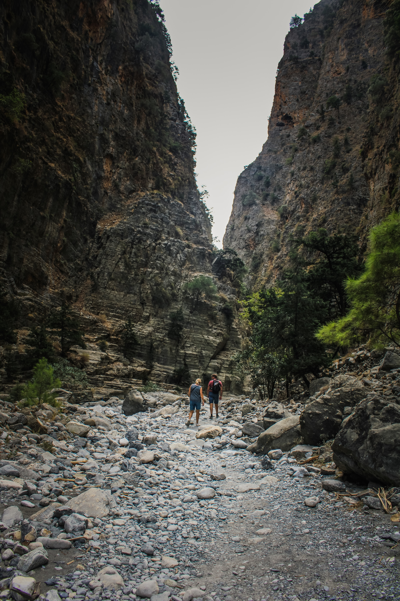
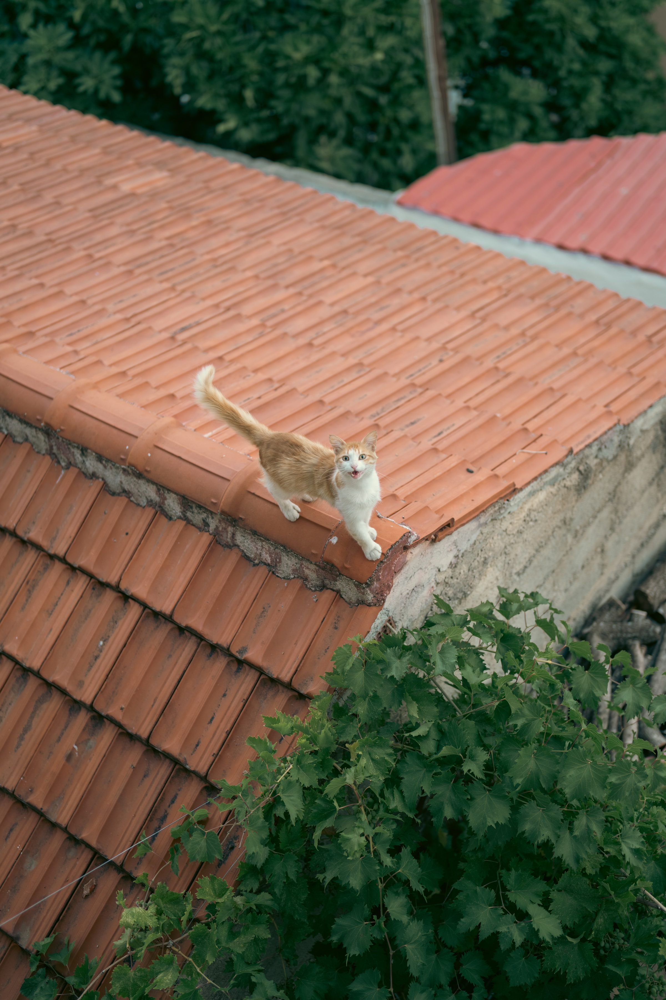
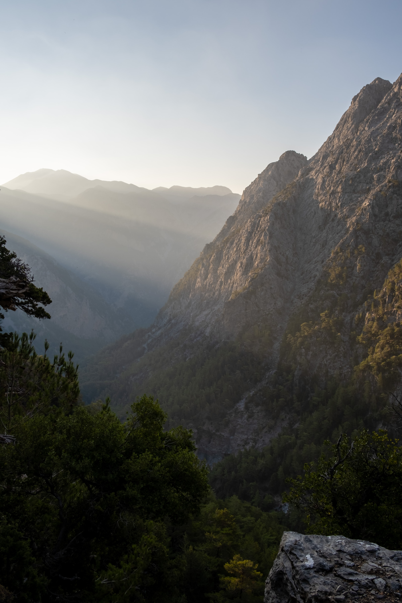
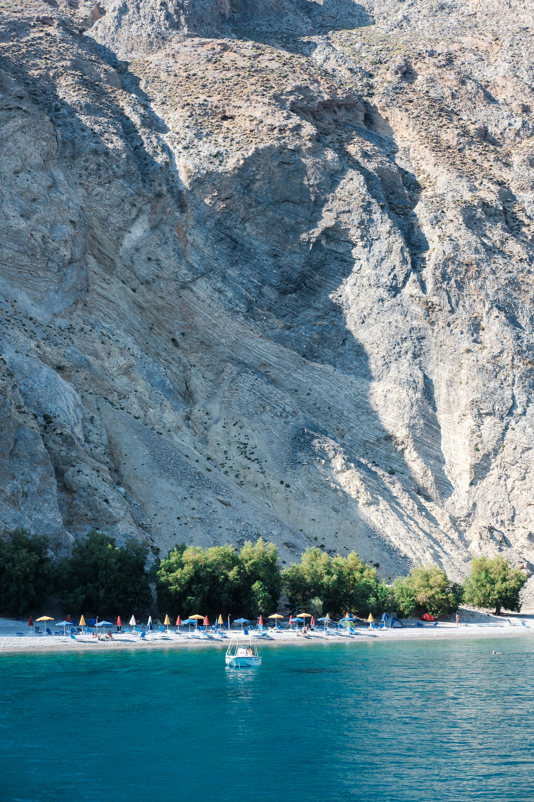
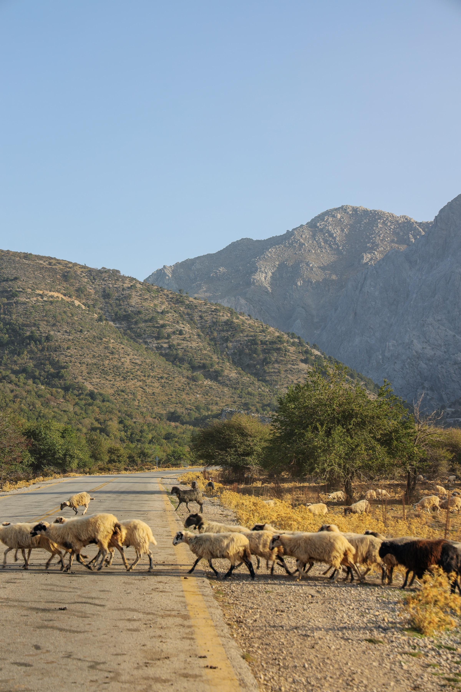

Accomodation
Pension Paradise, Αγία Ρούμελη - Λουτρό, Agia Roumeli, Greece
Itinerary
10th of July - 11th of July
Day 1 (10/07/2023)
Arrive to Loutro and go to the viewpoint
Find overnight parking for the cars
Take a 40 min ferry to Agia Roumeli
Check in, have lunch, and relax on the beach
Dinner at Artemis
Day 2 (11/07/2023)
Have breakfast and hike the Samaria Gorge
Take a 40 min ferry back to Loutro
Lunch at Startis Taverna
Drive 2 hours to Chania
Dinner at Ela Taverna or Perperas







